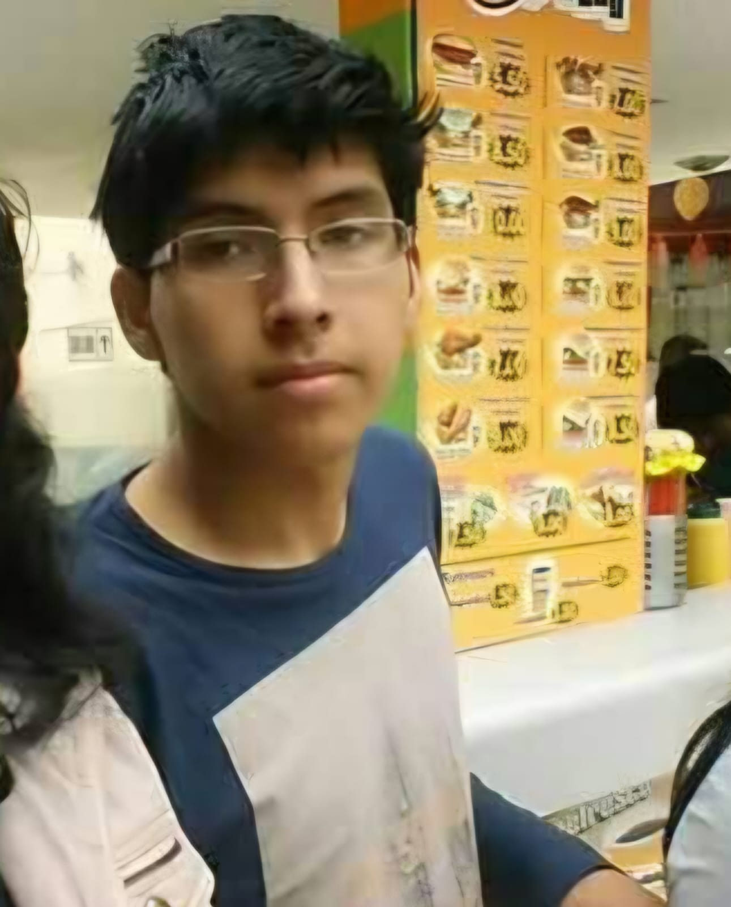

FELIZ CUMPLEAÑOS JUAN ANTONIO
También conocido como...
Hoy no celebramos un año más de vida. Celebramos un nuevo episodio de este fenómeno inexplicable pero siempre un gran amigo.

📁 HISTORIA CLÍNICA
DOCUMENTO CONFIDENCIALNombre: Juan Antonio
Alias: LOKO
Estado: Cumpleañero
Clasificación: Caso extraordinario
Pronóstico: MULTIPLES PERSONALIDES
DIAGNÓSTICO PRELIMINAR
El paciente presenta mas 13 personalidades registradas por el momento se manisfestaron 5. Se recomienda mantener una distancia prudente y no cuestionar sus decisiones durante el dia.
LAS CINCO PERSONALIDADES
Selecciona una personalidad para consultar su historial.
🙂 Juan Antonio
La versión aparentemente normal del paciente. Saluda, conversa y parece una persona funcional. El personal confirma que esta personalidad existe.
"Hola, soy Juan Antonio". Juan Antonio, justo antes del incidente.
¿AUTORIZAMOS EL ALTA MÉDICA?
El paciente tiene derecho a recibir todos los saludos de los integrantes.